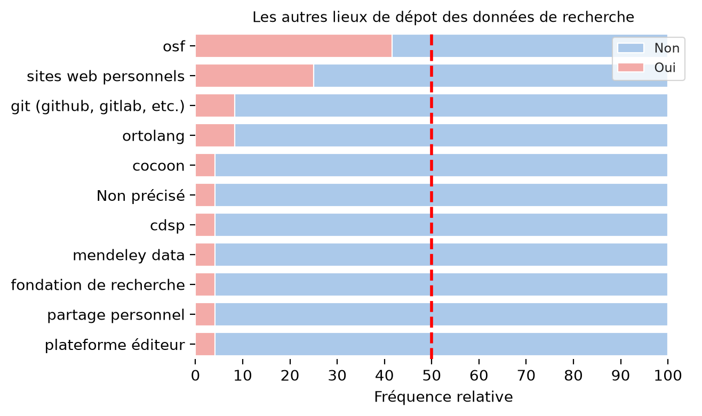
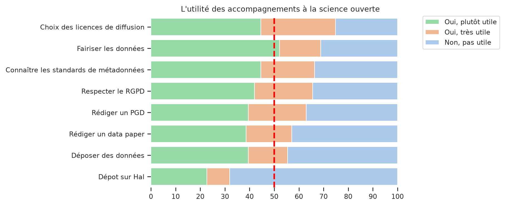
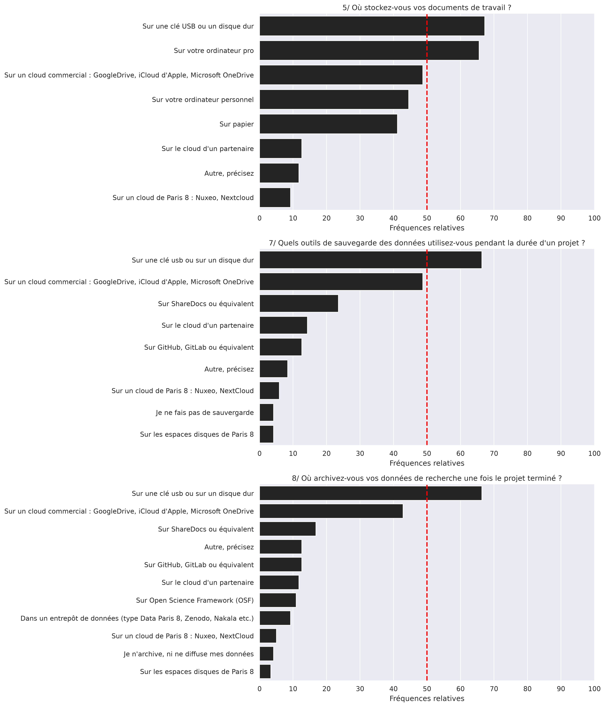

Connaissance et pratique de la Science Ouverte#
Les connaissances et les pratiques de la Science Ouverte constituaient le thème central de l’enquête. La première question évaluait ainsi le degré de familiarité des participants concernant les principes de la Science Ouverte (Table 8). 56% ont répond “oui, un peu”, 32% “oui, tout à fait” et 12% “non”.
Principes de la science ouverte |
nb |
freq |
|---|---|---|
Non |
14 |
11,8 |
Oui, tout à fait |
38 |
31,9 |
Oui, un peu |
67 |
56,3 |
Total |
119 |
100,0 |
Les questions suivantes portaient sur le dépôt dans HAL, la publication de ressources via Octaviana et la diffusion des données de recherche. Le dépôt dans HAL apparaît être la pratique la plus répandue (Table 9). 35% des répondants disent déposer à chaque fois leurs productions scientifiques sur la plateforme et 40 % l’ont fait plusieurs fois. Sans surprise, les doctorants sont surreprésentés parmi les “non déposants” dans HAL lorsque l’on compare les différents statuts (Table 10). On observe toutefois que 10% des chercheurs ayant répondu à l’enquête disent n’avoir jamais effectué de dépôt sur HAL.
Dépôt dans Hal |
nb |
freq |
|---|---|---|
Non |
15 |
12,6 |
Oui, plusieurs fois |
48 |
40,3 |
Oui, systématiquement |
41 |
34,5 |
Oui, une fois |
15 |
12,6 |
Total |
119 |
100,0 |
Statut |
Non |
Oui, plusieurs fois |
Oui, systématiquement |
Oui, une fois |
Total |
|---|---|---|---|---|---|
Chercheur |
9,6 |
40,3 |
38,5 |
11,5 |
100,0 |
Doctorant |
41,7 |
33,3 |
0,0 |
25,0 |
100,0 |
Personnel d’appui à la recherche |
0,0 |
66,7 |
0,3 |
0,0 |
100,0 |
Total |
12,6 |
40,3 |
34,5 |
12,6 |
100,0 |
En compraison des dépôt dans HAL où 87% des répondants l’ont fait au moins une fois, ils ne sont plus que 28% à “avoir déjà diffusé leurs données de recherche une fois le projet terminé” (Table 11). On retrouve la même proportion au sein de la population des chercheurs : 30% d’entre eux ont déjà diffusé leur données (Table 12). Tandis que 90% des doctorants ne l’ont jamais fait. On notera par ailleurs que la diffusion des données ne signifie pas nécessairement que celles-ci ont été ouvertes selon les principes FAIR (Facile à trouver, Accessible, Interopérable, Reproductible). Par exemple, le partage de données via une clé usb ou un site web personnel ne répondent pas deux premiers principes.
Les répondants pouvaient choisir plusieurs modalités de diffusion parmi les quatre options proposées. Cinq personnes (4%) disent avoir utilisé Nakala, quatre (3%) ont des données sur Zenodo et une seulement en entrepose sur Data Paris 8. Les autres modalités les plus citées (Fig. 5) sont Open Science Framework (N=10, 8%), les sites web personnels (N=6, 5%), les dépôts “git” (N=2, 2%) et les entrepots spécialisés Ortolang (N=2, 2%) et Cocoon (N=1, 1%).
Ouverture des données |
nb |
total |
freq |
|---|---|---|---|
Non |
86 |
119 |
72,3 |
Autre, précisez |
24 |
119 |
20,7 |
Oui, sur Nakala |
5 |
119 |
4,2 |
Oui, sur Zenodo |
4 |
119 |
3,4 |
Oui, sur Data Paris 8 |
1 |
119 |
0,8 |
Statut |
Non |
Oui |
Total |
|---|---|---|---|
Chercheur |
71,2 |
28,8 |
100 |
Doctorant |
91,7 |
8,3 |
100 |
Personnel d’appui à la recherche |
0,0 |
100,0 |
100 |
Total |
71,4 |
28,6 |
100 |

Fig. 5 Les modes d’ouverture des données#
Concernant Octaviana (Table 13), 11 répondants (9%) ont déposé des ressources sur la bibliothèque numérique. Cinq d’entre eux ont mis des publications. Ils sont cinq répondants également à avoir déposé des travaux universitaires et trois ont publié des captations d’événements. En tout une personne interrogée sur cinq n’a jamais entendu parlé d’Octaviana.
Dépot sur Octaviana |
nb |
freq |
|---|---|---|
Non |
108 |
90,8 |
Oui |
11 |
9,2 |
Total |
119 |
100,0 |
Les besoins d’accompagnement à la Science Ouverte#
Les besoins d’accompagnement exprimés par les répondants reflètent leur degré de familiarité avec les sujets proposés. En effet, 70% des personnes interrogées jugent utile l’accompagnement à l’ouverture des données selon les principes FAIR contre 32% pour l’accompagnement au dépôt des publications dans HAL (Fig. 6).
Nous pouvons relier ces différences de proportion au fait que la bibliothèque a mis en place des accompagnements et des formations à HAL depuis plus de six ans. Ces dispositifs participent de la mise en oeuvre du premier Plan national pour la Science Ouverte (2018-2021), lequel mettait l’accent sur l’ouverture des productions scientifiques. Les chercheurs ont été d’autant plus incités à signaler leurs publications, à défaut de les ouvrir totalement, que le Haut comité pour l’évaluation de la recherche et de l’enseignement supérieur (HCERES) prend en compte la liste des références présentes dans HAL pour évaluer les unités de recherche. La plateforme HAL est ainsi devenue un objet du quotidien des chercheurs. À l’inverse, instituée par la Directive européenne et mise en avant dans le second Plan national pour la Science Ouverte (2021-2024), l’ouverture des données est un sujet relativement nouveau et les formations proposées par la bibliothèque sur ce sujet sont plus récentes.

Fig. 6 Utilité des accompagnements à la Science Ouverte#
q8_ter
| accomp_name | interet_accomp | cum_sum | nb | Oui | |
|---|---|---|---|---|---|
| 23 | Choix des licences de diffusion | Non, pas utile | 100.000000 | 0.252101 | 0.747899 |
| 21 | Choix des licences de diffusion | Oui, très utile | 74.789916 | 0.302521 | 0.747899 |
| 22 | Choix des licences de diffusion | Oui, plutôt utile | 44.537815 | 0.445378 | 0.747899 |
| 11 | Fairiser les données | Non, pas utile | 100.000000 | 0.310924 | 0.689076 |
| 9 | Fairiser les données | Oui, très utile | 68.907563 | 0.168067 | 0.689076 |
| 10 | Fairiser les données | Oui, plutôt utile | 52.100840 | 0.521008 | 0.689076 |
| 20 | Connaître les standards de métadonnées | Non, pas utile | 100.000000 | 0.336134 | 0.663866 |
| 18 | Connaître les standards de métadonnées | Oui, très utile | 66.386555 | 0.218487 | 0.663866 |
| 19 | Connaître les standards de métadonnées | Oui, plutôt utile | 44.537815 | 0.445378 | 0.663866 |
| 8 | Respecter le RGPD | Non, pas utile | 100.000000 | 0.344538 | 0.655462 |
| 6 | Respecter le RGPD | Oui, très utile | 65.546218 | 0.235294 | 0.655462 |
| 7 | Respecter le RGPD | Oui, plutôt utile | 42.016807 | 0.420168 | 0.655462 |
| 5 | Rédiger un PGD | Non, pas utile | 100.000000 | 0.369748 | 0.630252 |
| 3 | Rédiger un PGD | Oui, très utile | 63.025210 | 0.235294 | 0.630252 |
| 4 | Rédiger un PGD | Oui, plutôt utile | 39.495798 | 0.394958 | 0.630252 |
| 2 | Rédiger un data paper | Non, pas utile | 100.000000 | 0.428571 | 0.571429 |
| 0 | Rédiger un data paper | Oui, très utile | 57.142857 | 0.184874 | 0.571429 |
| 1 | Rédiger un data paper | Oui, plutôt utile | 38.655462 | 0.386555 | 0.571429 |
| 17 | Déposer des données | Non, pas utile | 100.000000 | 0.445378 | 0.554622 |
| 15 | Déposer des données | Oui, très utile | 55.462185 | 0.159664 | 0.554622 |
| 16 | Déposer des données | Oui, plutôt utile | 39.495798 | 0.394958 | 0.554622 |
| 14 | Dépot sur Hal | Non, pas utile | 100.000000 | 0.680672 | 0.319328 |
| 12 | Dépot sur Hal | Oui, très utile | 31.932773 | 0.092437 | 0.319328 |
| 13 | Dépot sur Hal | Oui, plutôt utile | 22.689076 | 0.226891 | 0.319328 |
Stockage, sauvegarde et archivage des données#
Le stockage, la sauvegarde et l’archivage renvoient à des temps différents du cycle de la donnée. Le stockage correspond au moment où les données sont exploitées. Au contraire l’archivage intervient après la phase de traitement et d’analyse, dans un moment où les données ne sont plus manipulées. Enfin, la sauvegarde est une mesure visant à garantir la sécurité et l’integrité des données. Il est ainsi recommandé de copier ses données sur trois supports différents. Il est toutefois possible que les différences entre ces trois concepts ne soient pas connues de tous.
50% des personnes interrogées ont cité au maximum trois supports de stockage. Concernant la sauvegarde des données, le nombre médian est de deux : 50% des personnes interrogées ont cité au maximum deux supports de sauvegarde. La clé usb ou le disque dur externe sont les supports les plus utilisés que ce soit pour le stockage (67%), la sauvegarde (66%) ou l’achivage (66%). Concernant les clouds, ce sont les services commerciaux (Google, Icloud) qui arrivent en tête. 49% des répondants disent stocker ou sauvegarder leurs documents sur ces services et 42% les emploient comme espaces d’achivage. À l’opposé, seulement 9% des personnes interrogées recourent au cloud de Paris 8 (5% si on parle de sauvegarde ou d’archivage).

Fig. 7 Les lieux de stockage, de sauvegarde et d’archivage des données#